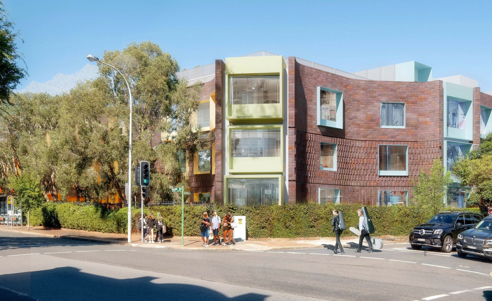

<html>
    <html>
    <head>
        <title>Environment Club</title>
        <link rel="stylesheet" href="gardening.css" type="text/css">
        <link rel="apple-touch-icon" sizes="180x180" href="apple-touch-icon.png">
        <link rel="icon" type="image/png" sizes="32x32" href="favicon-32x32.png">
        <link rel="icon" type="image/png" sizes="16x16" href="favicon-16x16.png">
        <link rel="manifest" href="site.webmanifest">
        <link rel="preconnect" href="https://fonts.googleapis.com">
        <link rel="preconnect" href="https://fonts.gstatic.com" crossorigin>
        <link href="https://fonts.googleapis.com/css2?family=Roboto+Condensed:ital,wght@0,100..900;1,100..900&family=Roboto:ital,wght@0,100;0,300;0,400;0,500;0,700;0,900;1,100;1,300;1,400;1,500;1,700;1,900&display=swap" rel="stylesheet">
        <link rel="stylesheet" href="https://fonts.googleapis.com/css2?family=Material+Symbols+Outlined:opsz,wght,FILL,GRAD@20..48,100..700,0..1,-50..200" />
    </head>

</html>
<body>
<section class="header">
    <nav>
        <a href="index.html"></a>
        <div class="nav-links">
            <ul onmouseleave="hidewhatwedo(); hideevents();">
                <li><a href="index.html">Home</a> </li>
                <li><a href="aboutus.html">About Us</a> </li>
                <li><a href="" class="dropdown_button" onmouseover="setTimeout(showwhatwedo, 300);hideevents();">What we do <span style="font-size: 8pt;">&#9660;</span></a>
                    <script>
                        function showwhatwedo(){
                            var dropdown = document.getElementById("whatwedo");
                            dropdown.style.display = "block";
                        }

                        function hidewhatwedo(){
                            var dropdown = document.getElementById("whatwedo");
                            dropdown.style.display = "none";
                        }

                    </script>
                <div class="dropdown_content" id="whatwedo" onmouseleave="hidewhatwedo();">
                    <a href="recycling.html">Recycling</a>
                    <a href="gardening.html">Gardening</a>
                    <a href="volunteering.html">Volunteering</a>
                </div>   </li>
                <li><a href="" class="dropdown_button" onmouseover="setTimeout(showevents, 300);hidewhatwedo();">Events <span style="font-size: 8pt;">&#9660;</span></a> 
                    <script>
                        function showevents(){
                            var dropdown = document.getElementById("events");
                            dropdown.style.display = "block";
                        }

                        function hideevents(){
                            var dropdown = document.getElementById("events");
                            dropdown.style.display = "none";
                        }
                    </script>
                <div class="dropdown_content" id="events" onmouseleave="hideevents();">
                    <a href="chowderbay.html">Chowder Bay</a>
                    <a href="schoolconference.html">School conference</a>
                    <a href="tarongazoo.html">Taronga Zoo</a>
                </div></li>
                <a href="contactus.html" class="button">Contact Us</a>
            </ul>

        </div>
    </nav>
</section>
<section class="body">
<div class="showcase">
    
    <div class="title_text">
        <h2>School Conference</h2>
    </div>

    </div>
</section>
<div class="information">
    <div class="image">
        
    </div>

    <div class="text">
        <h2>When is it</h2>
        <p>
            In August, the Environment Club will host a school conference, inviting students from neighboring schools to witness our eco-initiatives at Mosman High School.</p>   
        <h2>What is it</h2>
        <p>
            Through our commitment to environmental stewardship, we strive to lead by example and motivate others to join us in our efforts. By showcasing our sustainable initiatives, such as reducing waste, conserving energy, and promoting eco-friendly practices, we aim to inspire collaboration and foster partnerships with like-minded institutions. <br><br>Together, we believe in the power of collective action to address pressing environmental challenges and create a more sustainable future for generations to come. By sharing our successes and learning from each other's experiences, we can amplify our impact and make a meaningful difference in our communities and beyond. Join us on this journey towards a greener, healthier planet, where every action, no matter how small, contributes to positive change.</p>    
    </div>
</div>

<section class="footer">
<div class="footer">
        <div class="environment_club">
            &nbsp;&nbsp;
            <h3>Environment &nbsp;&nbsp;&nbsp;&nbsp;&nbsp;&nbsp;&nbsp;Club</h3>
            <p>The Mosman High School Environment Club is a group that runs on Tuesday lunchtimes. We work towards a more environmental future.</p>
            &nbsp;&nbsp;&nbsp;&nbsp;&nbsp;&nbsp;<a href="aboutus.html" class="button_footer_logo">About Us</a>
        </div>
         <div class="Whatwedo_footer">
        <h3>What we do</h3>
        <a href="recycling.html" class="whatwedo_footer_links" class="button_whatwedo_cup">Recycling</a>
        <br><br>
        <a href="gardening.html" class="whatwedo_footer_links" class="button_whatwedo_recycling">Gardening</a>
        <br><br>
        <a href="volunteering.html" class="whatwedo_footer_links" class="button_whatwedo_volunteering">Volunteering</a>
      </div>

     <div class="events_footer">
        <h3>Events</h3>
        <a href="chowderbay.html" class="events_footer_links" class="button_events_chowderbay">Chowder Bay</a>
        <br><br>
        <a href="schoolconference.html" class="events_footer_links" class="button_whatwedo_schoolconference">School Conference</a>
        <br><br>
        <a href="tarongazoo.html" class="events_footer_links" class="button_whatwedo_tarongazoo">Taronga Zoo</a>
      </div>

       <div class="contact_footer">
        <h3>Contact</h3>
        <p>769 Military Road, <br>Mosman NSW 2088</p>
        <br>
        <p>mosmanh.school@det.nsw.edu.au</p>
        <br>
        <p>02 9968 1006</p>
        <br><br><br><br><br>

        <p class=" madeby">Website made by Hannah Ishimura Wright</p>
        
    </div>
</div>
    </div>
</section>

</body>

</html>